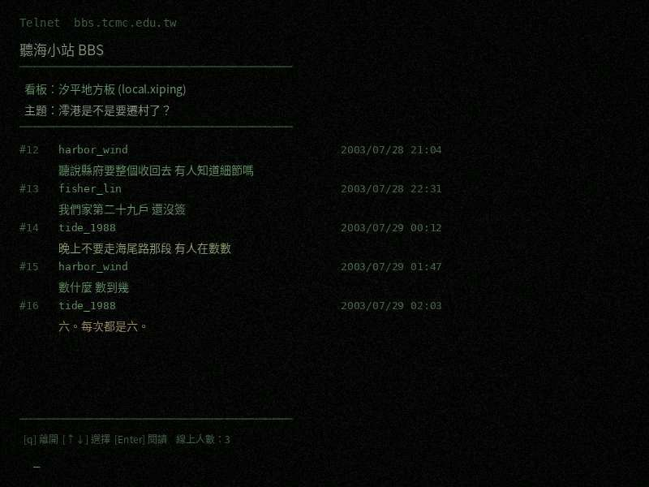

聽海小站（存檔）
bbs.tcmc.edu.tw／聽海小站 BBS v2.4 主機已於 2003/09/30 下線

2003/08/15 23:12 畫面存檔（由匿名使用者備份）
╔══════════════════════════════════════════════╗
║ 聽 海 小 站 BBS v2.4 ／ 汐平縣澪港鎮 ║
║ 2003/08/15 23:12 在線人數：3（其中 2 人為訪客） ║
╚══════════════════════════════════════════════╝
【系統公告】本站主機將於 2003/09/30 停止服務。
資料不另行備份。請自行取回。
──────────────────────────────────────────────
編號 0412 2003/08/09 21:40 作者：a-ning
【討論】有人知道潮音宮的法會後來怎麼了嗎
我阿姨住海尾路，她說那天晚上整條路都停電。
隔天宮裡沒有人。門是開著的。
推文：3
──────────────────────────────────────────────
編號 0413 2003/08/12 02:07 作者：tcmc_student
【問題】請問周夢回是誰
名冊上第 29 戶。可是戶政事務所查不到這個人。
有人說他 1998 年就失蹤了。
那他 2003 年在漁會蓋章的是誰？
推文：7（其中 1 則已被刪除）
──────────────────────────────────────────────
編號 0414 2003/08/15 23:11 作者：unknown
【無標題】
不要在晚上聽第七卷。
我聽過一次。裡面不是她的聲音。
──────────────────────────────────────────────
【系統】使用者 unknown 於 2003/08/15 23:12 離線。
站長的話：本站不收錄任何與海有關的錄音檔。
（最後一次備份：2003/08/15 23:12。之後的資料已無法讀取。）